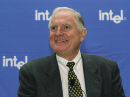
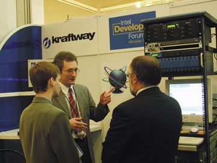

Андрей Борзенко
2 октября в Москве прошел Форум Intel для разработчиков (Intel Developer Forum, IDF) - крупнейший международный конгресс разработчиков компьютерной техники и программного обеспечения. IDF вот уже пятый год становится одним из ключевых событий в мировой индустрии информационных технологий. В этом году Россия впервые была включена в список государств, где корпорация Intel проводит такие мероприятия. Таким образом, впервые IDF был организован в регионе EMAR (страны Восточной Европы, Ближнего Востока и Африки).
"Для проведения выездных сессий IDF выбираются страны, занимающие лидирующее положение в своих регионах, и на принятие решения о проведении Форума в Москве повлияли потрясающие показатели роста российской компьютерной и телекоммуникационной индустрии", - сказал президент российского представительства корпорации Intel Стив Чейз.
Intel для России
Руководство Intel действительно считает российский компьютерный рынок одним из наиболее быстрорастущих и перспективных в мире. Деятельность Intel в России и других странах СНГ с каждым годом приобретает все больший размах, что проявляется не только в поступательном росте объема продаж, но и в том, что здесь действуют различные программы компании, способствующие ускоренному росту местного рынка ИТ, а также корпоративные программы в поддержку российской науки и образования.
Основная тема московского Форума Intel - адаптация и внедрение современных компьютерных и коммуникационных технологий, а также построение своеобразных технологических экосистем на базе архитектуры Intel, включающих в себя как аппаратные, так и программные решения корпорации.
Одним из главных событий Форума стал пленарный доклад главного исполнительного директора корпорации Intel доктора Крейга Барретта. Это уже третий его визит в Москву за последние пять лет, что само по себе свидетельствует о повышенном внимании руководства Intel к России. "Наша компания уже давно верит в потенциал российского рынка ПК, который сегодня принадлежит к числу самых быстрорастущих в мире, - отметил д-р Барретт. - С момента открытия нашего представительства в Москве одиннадцать лет назад Intel проводит последовательную политику внедрения на местный рынок своих новейших технологий, осуществляя здесь разнообразные программы, направленные на создание в России современной индустрии персональных компьютеров".
|  | Крейг Барретт, главный исполнительный директор корпорации Intel, на пресс-конференции в Москве.
|
В своем докладе д-р Барретт призвал правительство, лидеров бизнеса и технологий в России создавать и внедрять технологии нового поколения, чтобы обеспечить конкурентоспособность страны на мировом рынке. Он обрисовал примерное будущее цифровых технологий и призвал Россию поддержать развитие компьютерной и телекоммуникационной отраслей экономики с акцентом на технологии следующего поколения.
Кроме того, Крейг Барретт говорил о целесообразности разработки в России целевых программ и создания учреждения, подобного агентству развития в Ирландии, для привлечения в страну разработок, а также устранения барьеров для инвестиций за счет либерализации телекоммуникационной отрасли, снятия тарифов и налогов на ее продукты, защиты интеллектуальной собственности и авторских прав. Что касается последнего вопроса, то случайно или нет, но буквально через день на заседании Правительства России довольно активно обсуждалась именно эта тема.
Д-р Барретт говорил также о необходимости модернизации телекоммуникационной инфраструктуры России и повсеместном внедрении беспроводного широкополосного доступа.
Особо в своем выступлении Крейг Барретт остановился на программе Intel "Инновации в образовании" - глобальном многомиллионном проекте, направленном на реализацию возможностей науки и технологии в образовании. Год назад корпорация распространила на Россию программу Intel "Обучение для будущего", и сегодня в нашей стране действует девять региональных учебных центров, где уже прошли обучение около четырех тысяч школьных учителей, а к середине 2003 г. планируется обучить в общей сложности 10 тыс. человек. Как объявил д-р Барретт, эта программа будет продолжена и после 2003 г., что позволит еще большему числу российских учителей получить практические навыки использования компьютерных технологий в учебном процессе.
Объявлено также было о планах создания до конца года лаборатории беспроводных технологий при Нижегородском государственном университете им. Н. И. Лобачевского, который широко известен своим радиофизическим факультетом. Основной задачей этой лаборатории будет реализация специальной программы Intel по проведению исследований и обучению студентов ННГУ. Программа должна способствовать развитию индустрии сотовых и беспроводных коммуникаций в России. Ожидается, что лаборатория станет своеобразным ядром для расширения образовательных инициатив в этой сфере и проведения исследований в области программной реализации алгоритмов для беспроводных технологий.
Кроме того, Крейг Барретт объявил о планах создания в России до конца этого года трех коммуникационных лабораторий, которые должны быть открыты при ведущих профильных вузах России: Московском техническом университете связи и информатики (базовая кафедра "Технологии электронного обмена данными" Ассоциации документальной электросвязи), Санкт-Петербургском университете телекоммуникаций им. М. А. Бонч-Бруевича (факультет "Сети связи, системы коммутации, вычислительная техника", кафедра "Системы коммутации и распределение информации") и Нижегородском государственном техническом университете (кафедра "Теории цепей и телекоммуникаций"). Создаваемые лаборатории должны стать образовательными центрами для обучения студентов и подготовки специалистов в области архитектуры Intel Internet Exchange Architecture (IXA).
Самые последние новинки
С другим ключевым докладом на Форуме выступил старший вице-президент, генеральный менеджер подразделения Enterprise Platforms Group корпорации Intel Майк Фистер. Его доклад был посвящен развитию инфраструктуры Интернета, переходу к модульным серверам и интеграции коммуникационных средств. Сегодня, когда Интернет связывает воедино сети, созданные для передачи голоса и данных, корпорация Intel разрабатывает модульные конструктивные блоки для компьютерной и коммуникационной отраслей. По словам г-на Фистера, эти блоки, обладающие лучшими в своем классе характеристиками, позволяют ускорить развертывание, увеличить производительность и повысить экономичность корпоративной инфраструктуры.
На Форуме также выступили глава российского представительства компании Microsoft Ольга Дергунова и первый заместитель министра РФ по связи и информатизации Борис Антонюк.
Программа московского Форума Intel для разработчиков включала несколько десятков часов лекций и лабораторных занятий, посвященных различным компьютерным и коммуникационным технологиям. Хотя IDF длился всего один день, но участники Форума смогли получить множество полезной информации о последних аппаратных и программных достижениях, новинках, передовых технологиях. В программе было несколько потоков, тематика которых охватывала все сферы деятельности корпорации Intel: общие вопросы, аппаратное обеспечение, программное обеспечение, коммуникационные технологии и микроконтроллеры, лабораторные работы.
Так, в потоке, посвященном аппаратному обеспечению, можно было услышать сообщение о стратегии Intel и технических особенностях применения перспективных технологий оперативной памяти. Другой доклад был посвящен скоростным интерфейсам для современных дисковых накопителей. В нем прозвучал краткий анализ рыночных тенденций, технических предпосылок перехода на новые спецификации, а также даны характеристики первого поколения интерфейса Serial ATA и перспективы его совершенствования. Еще в одном докладе рассказывалось об архитектурных особенностях стандарта PCI Express (ранее известного под кодовым названием 3GIO).
В течение всего дня работы этого крупнейшего отраслевого конгресса проходила выставка новейших компьютерных и коммуникационных технологий. Это традиционная практика всех IDF, она позволяет разработчикам увидеть воочию последние новинки, о которых рассказывается на Форуме.
"Форум разработчиков всей ИТ-индустрии"
"Формально первая буква в аббревиатуре IDF означает Intel, но фактически она обозначает слово "индустрия" (industry), - заметил в своем выступлении на весеннем IDF 2002 года главный технический директор корпорации Intel Патрик Гелсингер, говоря о тенденциях в развитии IDF. - Наша цель заключается в том, чтобы как можно шире вовлечь представителей индустрии в организацию и проведение этого Форума. Тот факт, что на весенней сессии Форума более трети лекционных и практических занятий проводилось представителями сторонних компаний, и то, что почти две сотни организаций представили там свои разработки, подтверждает, что Форум Intel для разработчиков по своей сути превращается в форум разработчиков всей ИТ-индустрии".
Осенняя сессия IDF в целом и московский Форум, в частности, не стали исключением. Вместе с Intel в ее лекционной и выставочной программе участвовали и другие компании - лидеры мирового и российского рынка высоких технологий.
Так, на стенде организаторов Форума демонстрировались как продукты, уже получившие широкое мировое признание, так и сравнительно новые на рынке инструментов для разработчиков. Не менее представительна была экспозиция корпорации Microsoft. Участвовала в выставке и корпорация NVIDIA - мировой лидер в области графических процессоров и коммуникационных устройств. Среди российских экспонентов хотелось бы выделить стенды компании "Эксимер ДМ" и молодой развивающейся компании Luxoft (входящей в группу компаний IBS), которая предлагает полный спектр услуг по разработке ПО.
Интересные экспозиции подготовили и другие разработчики, например, группа компаний Rover Computers и европейский лидер в области компьютерной техники Fujitsu Siemens Computers.
Специалисты нижегородского Центра Intel по разработке ПО представили технологию Light Field Mapping (LFM), разработанную в сотрудничестве с исследовательской лабораторией Intel в Санта-Кларе (шт. Калифорния). Это метод интерактивной фотореалистичной визуализации трехмерных объектов со сложными отражательными свойствами. Технология LFM применяется для моделирования освещения на поверхности объектов по изображениям, полученным путем сканирования. Посредством LFM любые трехмерные объекты или сцены (как физические, так и виртуальные) можно представить с помощью цифровых моделей и визуализировать под любым углом зрения с учетом точно воспроизведенного, абсолютно реалистичного освещения на поверхностях, что чрезвычайно актуально для детального воссоздания фотореалистичных картин в режиме реального времени (например, в кино или компьютерных играх).
Российский производитель компьютерного и серверного оборудования компания Kraftway Computers представила сразу две новинки - центр обработки данных на базе процессоров Intel Itanium 2 и защищенный сервер в индустриальном исполнении GEG Express ISP-R. Kraftway, в отличие от остальных участников, уже имеет опыт участия в IDF: на проходившем в сентябре аналогичном мероприятии в Сан-Хосе Kraftway первой из отечественных компаний продемонстрировала свои разработки.
|  | Kraftway представляет.
|
По мнению разработчиков, защищенный сервер в индустриальном исполнении GEG Express ISP-R может эксплуатироваться в самых неблагоприятных условиях окружающей среды. Он сертифицирован на соответствие стандартам EBS-3 и ESTI, регламентирующим способность оборудования противостоять воздействию высокой температуры, влажности, высоты, сохранять работоспособность в зонах землетрясений, противостоять распространению пламени в случае пожара. Сервер оснащен системами удаленного управления Intel ISC-Te, TAM и системой Telco Alarm Management, обеспечивающей визуальные, звуковые и SNMP-сообщения о проблемах.
Стивен Павловски: "Главное - это поддержка индустрии"На прошедшем московском Форуме Intel для разработчиков директор по технологиям связи и соединений Intel Labs Стивен Павловски сделал доклад о стратегии Intel и технических особенностях применения перспективных технологий оперативной памяти на 2003 г. и далее. В частности, он ознакомил участников Форума с результатами анализа, проведенного инженерами Intel, а также с перспективами разработки и использования основных современных и будущих типов оперативной памяти - DDR, DDRII и RDRAM. После выступления главный редактор журнала "BYTE/Россия" Андрей Борзенко встретился с г-ном Павловски и попросил ответить его на несколько вопросов. Поскольку сфера деятельности директора по технологиям связи и соединений довольно широка, разговор шел не только о памяти.
"BYTE/Россия": Сейчас большой интерес вызывает новая архитектура PCI Express. Каковы были предпосылки ее появления? Стивен Павловски: Надо отметить, что эта разработка продолжается уже в течение нескольких лет. Недавно члены группы PCI-SIG закончили работу над основными разделами спецификаций PCI Express 1.0. Вообще говоря, шина PCI - это уникальное явление на современном компьютерном рынке. Важную роль в ее становлении сыграла корпорация Intel. Однако с появлением высокоскоростных периферийных интерфейсов, например, Ultra3 SCSI, Fibre Channel, Gigabit Ethernet, пропускной способности имеющихся реализаций PCI стало недостаточно. Кстати, первым шагом отказа от PCI в качестве шины, соединяющей северный и южные мосты наборов микросхем, стало использование так называемой хабовой архитектуры (Intel Hub Architecture), которая позволила существенно увеличить скорость обмена данными. Ожидается, что за следующие 10 лет требования к пропускной способности ввода-вывода вырастут более чем в 50 раз. Таким образом, разработчикам стало ясно, что параллельная реализация шины близка к своему пределу и необходима универсальная архитектура последовательного типа, производительность которой будет ограничиваться исключительно технологическими особенностями соединений. "BYTE/Россия": Какие требования предъявлялись к новой архитектуре? С. П.: PCI Express расширяет и углубляет существующие наработки PCI. Предполагается, что новая архитектура будет с равным успехом применяться в настольных и мобильных системах, серверах, коммуникационных устройствах и встроенных приложениях. Таким образом, можно говорить об универсальности и поддержке всех видов платформ, о сбалансированных для различных сегментов производительности и наборе возможностей. Что касается масштабируемости, то производительность может расти за счет изменения частоты и добавления дополнительных линий связи. На сегодняшний день достигнута довольно высокая пропускная способность в расчете на одну линию - 2,5 Гбит/с. Предполагается, что в обновленной спецификации (версия PCI Express 2.0) скорость возрастет до 5-6 Гбит/с. Особо следует отметить экономичность. Дело в том, что стоимость структуры на системном уровне не выше стоимости PCI, поскольку можно использовать массовые компоненты систем. И, конечно, важна обратная совместимость с текущими стандартами PCI. Так, PCI Express не требует новых ОС и BIOS. Загрузка существующих ОС будет выполняться без каких-либо дополнений и изменений. Это же касается драйверов устройств, соответствующих PCI 2.2. Стоит отметить, что элементы PCI Express эмулируют конфигурацию среды PCI, а модернизация физического уровня не влияет на канальный и более высокие уровни. Технология PCI Express развивает платформу в целом, защищая капиталовложения в PCI, что обеспечивает долголетие новой архитектуры. "BYTE/Россия": Разработки PCI Express и InfiniBand как-то коррелировали между собой? С. П.: И та и другая технология использует одинаковые электрические параметры, т. е. на физическом уровне они идентичны. У нас были другие варианты, но мы остановились именно на этом. Во всем остальном эти технологии различны, поскольку нацелены на два совершенно разных рынка: ведь InfiniBand предназначена в первую очередь для центров обработки данных. "BYTE/Россия": Что Вы можете сказать о стандартах RapidIO и Hypertransport? С. П.: Спецификация RapidIO в первую очередь предназначена для коммуникационного оборудования и коммуникационных серверов, а Hypertransport - это интерфейс "кристалл-кристалл". "BYTE/Россия": Как скоро новая технология PCI Express появится на рынке? С. П.: Начало массового промышленного производства компонентов PCI Express намечено на второе полугодие следующего года. Ожидается, что соответствие будущим приложениям и технологиям будет обеспечено в течение как минимум ближайшего десятилетия. "BYTE/Россия": А как реагирует на новый стандарт индустрия? С. П.: Поддержка индустрии - это во многом залог успеха той или иной технологии. Как вы, наверное, уже знаете, на IDF, который прошел в Сан-Хосе в начале осени, было объявлено, что более 30 ведущих компьютерных и телекоммуникационных компаний вошли в число участников новой программы Intel Developer Network для технологии PCI Express. Широкое вовлечение компаний отрасли в программу ускорит процесс разработки и поможет сделать преимущества технологии PCI Express доступными для платформ с архитектурой Intel. Программа Intel Developer Network станет дополнением к работе комитета PCI-SIG, который определяет и поддерживает спецификации PCI Express. Программа должна сформировать Web-сообщество и информационную среду, которые будут предоставлять разработчикам сведения, инструментарий и техническую поддержку, способствуя развитию технологии PCI Express. Участники программы первыми получат доступ к инструментальным средствам и вспомогательным проектным материалам. "BYTE/Россия": Каковы основные требования к перспективной памяти? С. П.: Во-первых, это большая пропускная способность, во-вторых, рассеиваемая мощность должна остаться такой же или даже снизиться, и, наконец, это большой объем или высокая плотность. Следует также сказать о необходимости компромисса за счет определения пропускной способности, рассеиваемой мощности и объема. "BYTE/Россия": Какие типы памяти будут использоваться для мобильных, настольных ПК, серверов в ближайшее время? С. П.: Проблемы выбора того или иного типа памяти для следующего поколения компьютеров массового производства зависят от множества противоречивых факторов технического и экономического характера. Речь идет о готовности индустрии, формировании партнерских отношений, перспективах усовершенствования поколений памяти, концентрации и распределении ресурсов проектирования. Перспективный тип памяти, за исключением, пожалуй, карманных ПК, - DDR. Карманные ПК еще некоторое время будут использовать SDRAM, поскольку в этом случае удается обеспечить требуемое низкое энергопотребление. Кстати, этот же тип памяти остается пока и самым дешевым, что часто немаловажно для таких требовательных к объемам памяти компьютерам, как серверы. "BYTE/Россия": Какие существуют планы касательно DDR? С. П.: Системы на базе DDR333 уже готовы к массовому производству. Организация JEDEC утвердила данный стандарт во II квартале этого года. Нами проведена большая работа, которая включала такие этапы, как определение интервалов устойчивости, измерение параметров стабильности систем, технологичности (повторяемости) и т. п. Планов индустрии по стандартизации DDR400 пока нет. Нет пока и планов поддержки этого типа памяти на платформах Intel. Здесь есть проблемы с повторяемостью на уровне системы. Среди основных задач, требующих решения, - контроль мощности и температуры при питании ядра 2,5 В. Есть пока проблемы и с поддержкой микросхем высокой емкости - 512 Мбайт и 1 Гбайт. К сожалению, до недавнего времени не удавалось добиться приемлемого процента выхода годных кристаллов, что, разумеется, сказывается на цене. "BYTE/Россия": А что можно сказать о DDRII? С. П.: Данная спецификация сейчас находится на уровне 0,5 - "функциональность". Уже появились первые инженерные образцы микросхем DDRII. Следующими шагами станут выпуск окончательной спецификации на микросхемы и модули, проверка на серийную реализуемость платформы, а также унификация поставки памяти от разных фирм-производителей. Среди основных проблем можно опять-таки назвать выход годных кристаллов и изготовление полупроводниковых приборов с напряжением 1,8 В. Intel совместно с JEDEC ведет сейчас напряженную работу над спецификацией DDRII для запуска этой технологии в 2004 г. Особое внимание уделяется проработке будущего ядра DRAM. "BYTE/Россия": Как складывается непростая судьба Rambus DRAM? С. П.: Сегодня этот тип памяти может с успехом использоваться для высокопроизводительных ПК, рабочих станций и сетевых устройств. В следующем году следует ориентироваться уже на RDRAM PC1066. Надо сказать, что Intel довольно плотно контактирует с индустрией для получения надежных решений на базе не только DDR333, но и PC1066. "BYTE/Россия": В прессе промелькнула информация о том, что Intel занимается проработкой возможностей применения магнитной и полимерной памяти в карманных ПК? С. П.: Без комментариев. "BYTE/Россия": Спасибо Вам за интервью. |